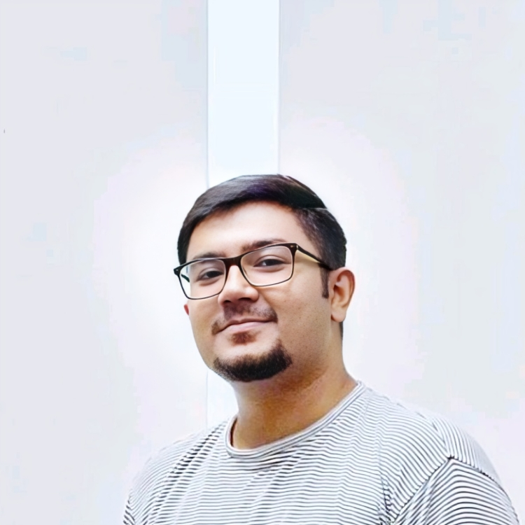

About Me
Hello! I'm Md Yasin Arafat.
I have graduated with BSc in Computer Science & Engineering at North South University (CGPA: 3.77), with a focus on artificial intelligence—especially computer vision, biomedical data analysis, and multimodal learning. I work on separate, independent research projects across North South University, BRAC University, Kamaleswaran Lab of Duke University (USA), and Mahidol University (Thailand).
Research Highlights
- Published Q1 Journal (Elsevier ARRAY, IF: 5.3): Second author of a multimodal deep learning framework combining facial and voice biomarkers for stroke detection, introducing an epoch-wise stochastic modality masking strategy that achieved 97% accuracy while improving robustness to missing modalities.
- Research Collaboration with Duke University (USA): Contributed to an NIH-funded review on medical foundation models, authoring and revising major sections on Transformers, State Space Models (SSMs), diffusion models, and multimodal physiological learning. The manuscript is currently under review at Artificial Intelligence Review (IF: 18.8).
- Embodied AI & Robotics Research: Developing AI systems for the Butler Intelligent Toolkit (BIT) by integrating LLMs, Vision-Language Models (VLMs), Vision-Language-Action (VLA) models, ROS2, SLAM, LiDAR, and edge AI for autonomous perception, navigation, and assistive robotics.
- Novel Privacy-Preserving Medical AI Framework: Proposed SEEFRA-KD, a lightweight federated learning and knowledge distillation framework for pediatric Down syndrome detection, achieving 98% accuracy while preserving patient privacy and enabling efficient edge deployment.
- International Research Experience: Conducted collaborative research with Duke University (USA), Mahidol University (Thailand), BRAC University, and North South University, focusing on medical AI, multimodal learning, computer vision, foundation models, and embodied AI.
- Competitive International AI Programs: Selected among the Top 10 participants from over 2,500 applicants for Nippon AI Dojo (METI, Japan) and currently participating in GCI World 2026 at the Matsuo-Iwasawa Laboratory, The University of Tokyo.
Teaching & Mentoring
- Undergraduate Teaching Assistant, Digital Logic Design (CSE231),Operating System Design(CSE323) NSU (Jun 2024 – Jan 2026): Conduct tutorials, support students, and assist with grading.
- Computer Programming Tutor: Deliver 1:1 and small-group sessions, develop custom problem-solving materials, and strengthen fundamentals.
Education
- North South University — B.Sc. in Computer Science & Engineering (2021 – 2026) · CGPA: 3.77
- Birshrestha Noor Mohammad Public College — HSC (2017 – 2020) · GPA: 5.00
- Motijheel Govt. Boys’ High School — SSC (2015 – 2017) · GPA: 5.00
Awards
- FAO Scholarship — 75% tuition fee waiver at NSU (2021 – 2026).
Grants & Funding
- CTRG Research Grant, North South University — Awarded to NIRO Lab in support of BIT (Butler Intelligent Toolkit), used as the physical testbed for validating AI systems for computer vision based perception development (PI: Dr. Shahnewaz Siddique).
- NIH Grant GM139967 — Supported the review manuscript "Review on Foundation Models for Medical Time Series: Trends, Advances, Challenges, and Future Directions" (PI: R. Kamaleswaran; Co-Is: M. Hassanuzzaman, T. Choudhary), Kamaleswaran Lab, Duke University.
I'm motivated to bridge AI research with real-world healthcare needs, aiming to build human-centered, accessible, and impactful solutions.